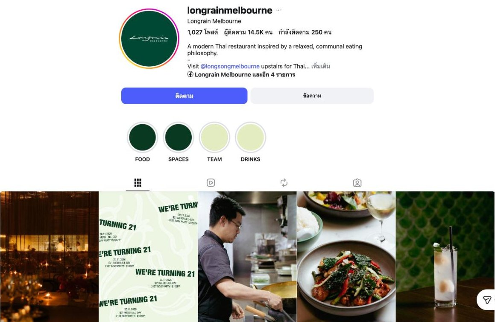
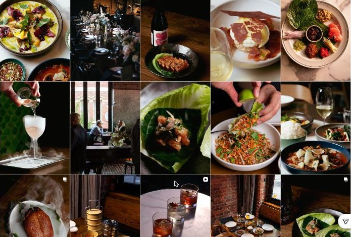
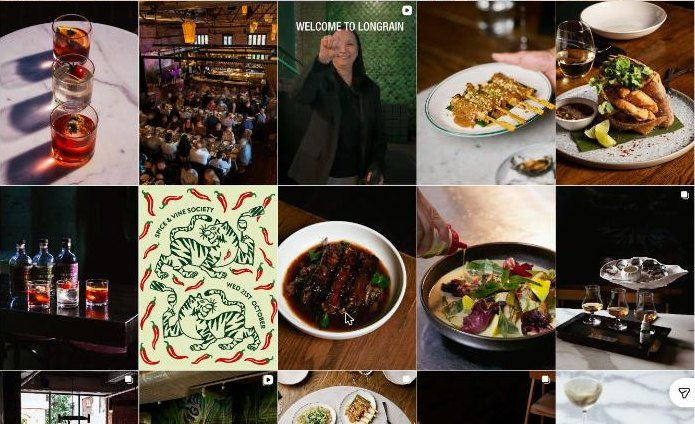
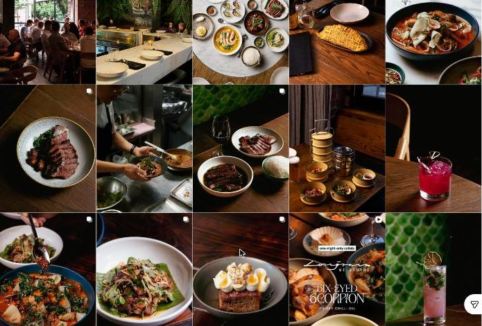
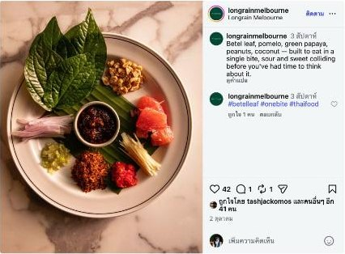
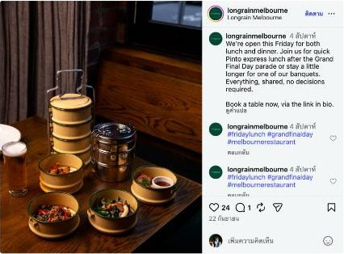

A benchmark shared by the KIN team: the concept, the food, how they talk about it, and what their social media looks like. Screenshots are for internal reference only.
A benchmark shared by the KIN team. What to learn from how Longrain sells a sharing table, its food and its social creative. Checked October 2026.
Modern Thai since 2005 (the Sydney original opened in 1999). A heritage former stable on Little Bourke Street, communal and round tables, a bar upstairs. Taken over by a chef-restaurateur in 2020, who kept it almost unchanged.
The banquet is the product: a signature banquet and a premium one. Thai flavours with Victorian produce. Signatures that stay for years: betel leaf, pork hock, eggnet, crispy rice salad. A Friday “Pinto” lunch.
“Institution”, “communal”, “shared”. Their bio calls it a modern Thai restaurant inspired by a relaxed, communal eating philosophy. Every post ends in a booking call to action.
@longrainmelbourne: about 14.5K followers, 1,027 posts. Story highlights: Food, Spaces, Team, Drinks. An older account (@longrainrestaurant, about 9K) now points to the new one.

Screenshot · internal ref
Screenshot · internal ref
Screenshot · internal ref
Screenshot · internal ref
Screenshot · internal ref
Screenshot · internal refScreenshots from Instagram @longrainmelbourne for internal reference only. Not KIN material; do not publish or share outside the team.
| Element | What Longrain does | The KIN version |
|---|---|---|
| Signature backdrop | The green fish-scale tile wall from the room appears behind drinks again and again. The same green runs through the logo, highlights and posters. | Our recurring backdrops: the lake, the indigo botanical fabric and blue-and-white tiles. Lake Blue in all graphics. |
| Light | Low-key and warm. Dark backgrounds, tungsten glow, candlelight in the room shots. | Our light changes through the day: daylight lunch, golden hour, lanterns. The time of day is the story (the 60). |
| Food shots | One dish per frame, tight 45° or top-down. Hands in frame: pouring, squeezing, spooning. Very little styling clutter. | Same discipline for the 40, with the lake or the room softly behind the plate. |
| Drinks | Theatre in the glass, such as a martini poured into a cloud of liquid nitrogen, shot against the tile. | Aperitivo at golden hour with the lake behind; the lantern-lighting moment. |
| Graphics | Typographic or illustrated posters only for events and announcements (anniversary, wine dinners, collabs). Everything else is photography. | KIN Tile and the reflection strokes only for events and news. Photography carries the rest. |
| People | Chef at the wok before service, team introduction reel, a full room on event nights. | Cooks from both kitchens, the team lighting the lanterns, families at the long table. |
| Highlights | Food · Spaces · Team · Drinks | Phuket Kitchen · Italia · The Lake · Moments · Events |
Longrain owns one colour and one wall. KIN can own one view and one light: the lake through the day.
Thai names are explained, not assumed: what a pinto is, what yum kao tod means, how an eggnet is made. Teaching becomes content.
The communal idea is said simply, for example “Everything, shared, no decisions required.” Round tables are described as built for sharing, with no head of the table.
The two posts we opened had 24 and 42 likes on about 14.5K followers, well under 1%. The feed is beautiful and consistent but reads like a menu. Reach comes from press, local creators and collabs more than from the feed itself.
Make The Long Table, both kitchens at one table, the thing people book by name.
Their “Thai flavours, Victorian produce” becomes our Phuket ingredients told through two kitchens, without saying fusion.
Three hero dishes per kitchen that people know by name and that appear again and again.
Their green tile wall is instantly recognisable. Ours is the lake and the indigo botanical room.
Show the cooking, the pouring and the sharing, not only finished plates.
Explain Phuket-Peranakan names and dishes in every caption; it is content and it builds pride.
A recurring series (producers, wine, a Phuket ingredient) and collabs with local brands, announced with KIN graphics.
Moments, people and reels from the lake through the day, which is exactly what setting-led KIN has.
Sources: Instagram @longrainmelbourne (viewed 23 Oct 2026); Broadsheet; Concrete Playground; Time Out; Gourmet Traveller; OpenTable; Forte Magazine; Longrain Canteen press release; HypeAuditor.